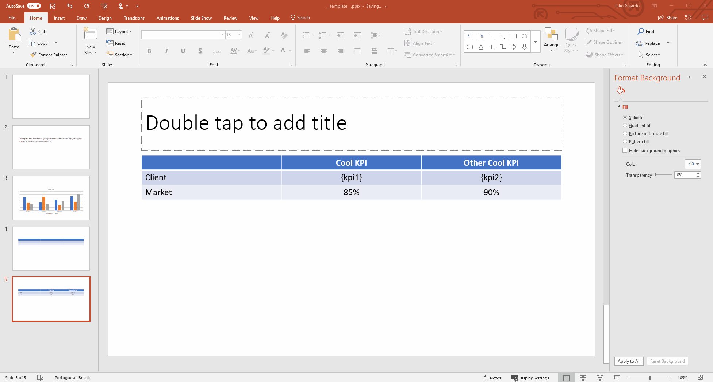

How-To Guides¶
How to render paragraphs¶
Template¶

How to replace the whole text of a paragraph¶
If you want to replace the whole text of the shape, you just need to define a dictionary, with the name of the shape as the key, and the text you want to render as the value.
Code:
>>> values = {
... 'slide_title': "Cool insight",
... }
>>> render_and_save_ppt('__template__.pptx', values, 'rendered_ppt.pptx')
How to render placeholders within a paragraph¶
If you want to render placeholders within the paragraph, the value of the dictionary has to be another dictionary, with the placeholders as keys, and the text to be replaced as values.
Code:
>>> values = {
... 'slide_text': {
... 'year': 2018,
... 'cpc_change': 50
... }
... }
>>> render_and_save_ppt('__template__.pptx', values, 'rendered_ppt.pptx')
Output¶

How to render a table¶
Template¶

How to render a table from a python list¶
In order to render a table, just pass the value of each cell as a list of lists.
Code:
>>> values = {
... 'table': [
... ['header1', 'header2', 'header3'],
... ['cell1', 'cell2', 'cell3'],
... ['cell4', 'cell5', 'cell6']
... ]
... }
>>> render_and_save_ppt('__template__.pptx', values, 'rendered_ppt.pptx')
How to render a table from a pandas DataFrame¶
In the case you want to render the values of a DataFrame in the table, just pass the DataFrame instead of the list of lists.
Code:
>>> data = [
... ['header', 'header2', 'header3'],
... ['cell1', 'cell2', 'cell3'],
... ['cell4', 'cell5', 'cell6']
... ]
>>> table_df = pd.DataFrame(data)
>>> table_df
col1 col2 col3
0 header1 header2 header3
1 cell1 cell2 cell3
2 cell4 cell5 cell6
>>> values = {'table': table_df}
>>> render_and_save_ppt('__template__.pptx', values, 'rendered_ppt.pptx')
How to render a table from a pandas DataFrame using the header¶
If you want to use the DataFrame’s column names as header, you should set the header attribute to True
Code:
>>> data = [
... ['cell1', 'cell2', 'cell3'],
... ['cell4', 'cell5', 'cell6']
... ]
>>> table_df = pd.DataFrame(data, columns=['header', 'header2', 'header3'])
>>> table_df
header1 header2 header3
0 cell1 cell2 cell3
1 cell4 cell5 cell6
>>> table_df.header = True
>>> values = {'table': table_df}
>>> render_and_save_ppt('__template__.pptx', values, 'rendered_ppt.pptx')
Output¶

How to render parts of a table using placeholders and a python dictionary¶
If you want to render partially a table, for example with some KPI’s values, you can use a python dictionary.
Template¶

Code:
>>> values = {
... 'table': {
... 'kpi1': "70%",
... 'kpi2': "80%"
... }
... }
>>> render_and_save_ppt('__template__.pptx', values, 'rendered_ppt.pptx')
Output¶

How to render charts¶
Template¶

How to render a chart from a python dictionary¶
In order to render a chart, you need to give a dictionary with three elements, the title, the data and the categories. The data is itself another dictionary, with the name of the series as the key and values of the series as the value. Code:
>>> values = {
... 'chart': {
... 'title': "Cool Graph",
... 'data': {
... 'displays': [500, 750, 600, 450, 500, 700, 550],
... 'clicks': [250, 150, 350, 300, 175, 275, 125]
... },
... 'categories': ['day1', 'day2', 'day3', 'day4', 'day5', 'day6', 'day7']
... }
... }
>>> render_and_save_ppt('__template__.pptx', values, 'rendered_ppt.pptx')
How to render a chart from a pandas DataFrame¶
You can also build a chart from a DataFrame, the column names will be used as the series names, the values as it values
and the index as the categories, if you want to set the title, you should add the attribute title to the DataFrame.
Code:
>>> data = [
... [250, 500],
... [150, 750],
... [350, 600],
... [300, 450],
... [175, 500],
... [275, 700],
... [125, 550],
... ]
>>> pd_chart = pd.DataFrame(data,
... index=['day1', 'day2', 'day3', 'day4', 'day5', 'day6', 'day7'],
... columns=['clicks', 'displays'])
>>> pd_chart
clicks displays
0 250 500
1 150 750
2 350 600
3 300 500
4 175 500
5 275 700
6 125 550
>>> pd_chart.title = "Cool Graph"
>>> values = {
... 'chart': pd_chart
... }
>>> render_and_save_ppt('__template__.pptx', values, 'rendered_ppt.pptx')
Output¶

How to format a piechart to display percentages¶
How to render a whole presentation¶
In case you’re wondering, you don’t need to render one shape at the time. If you have a template like the previous one, you can render all the shapes with the following code:
>>> values = {
... 'slide_title': "Cool insight",
... 'slide_text': {
... 'year': 2018,
... 'cpc_change': 50
... }
... 'table': [
... ['header1', 'header2', 'header3'],
... ['cell1', 'cell2', 'cell3'],
... ['cell4', 'cell5', 'cell6']
... ]
... 'chart': {
... 'title': "Cool Graph",
... 'data': {
... 'displays': [500, 750, 600, 450, 500, 700, 550],
... 'clicks': [250, 150, 350, 300, 175, 275, 125]
... },
... 'categories': ['day1', 'day2', 'day3', 'day4', 'day5', 'day6', 'day7']
... }
... }
>>> render_and_save_ppt('__template__.pptx', values, 'rendered_ppt.pptx')